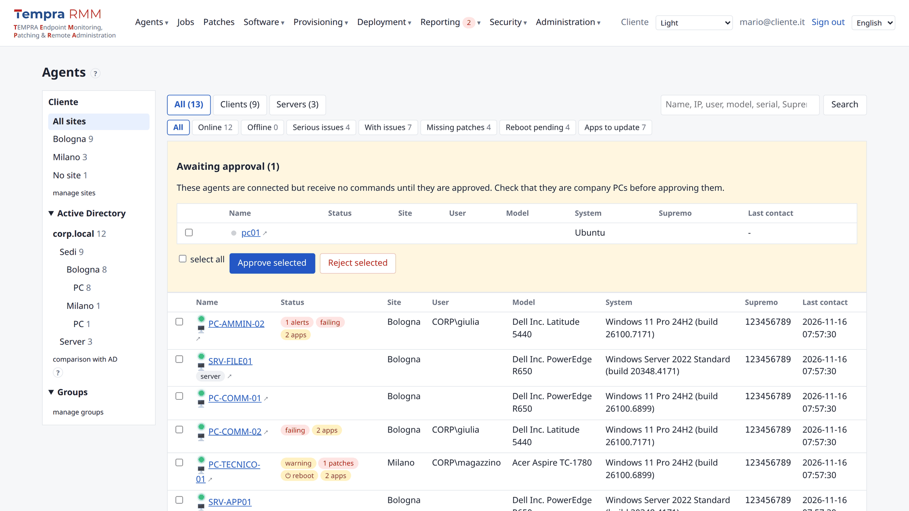
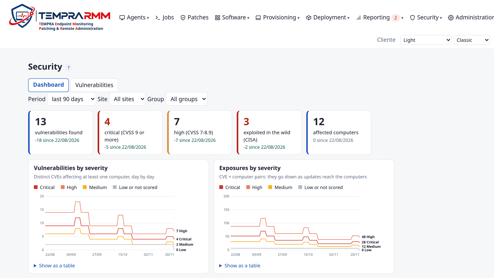
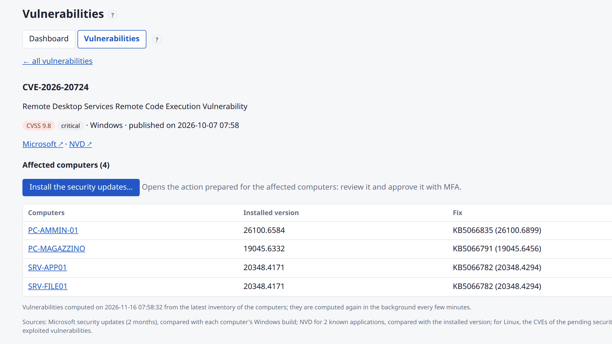
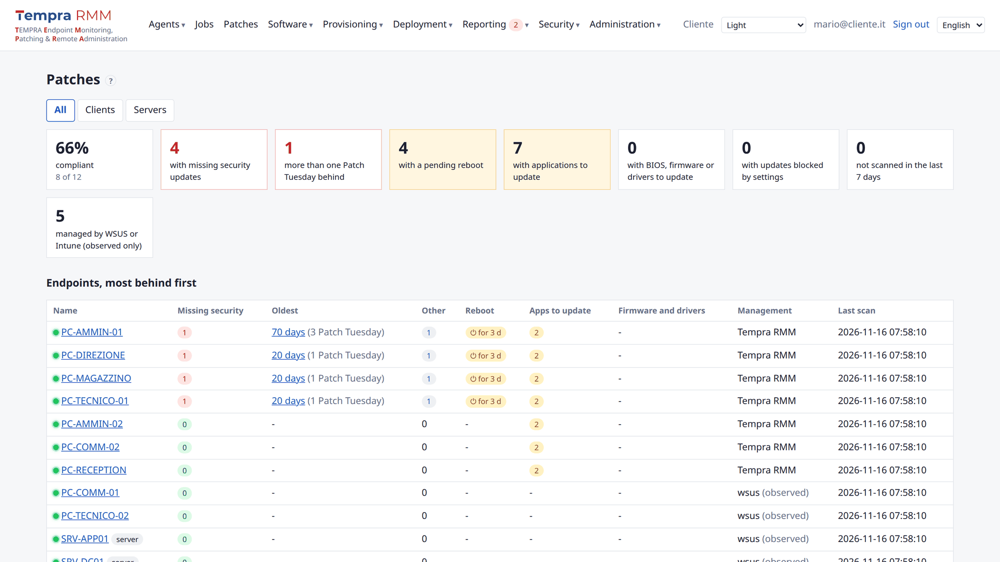
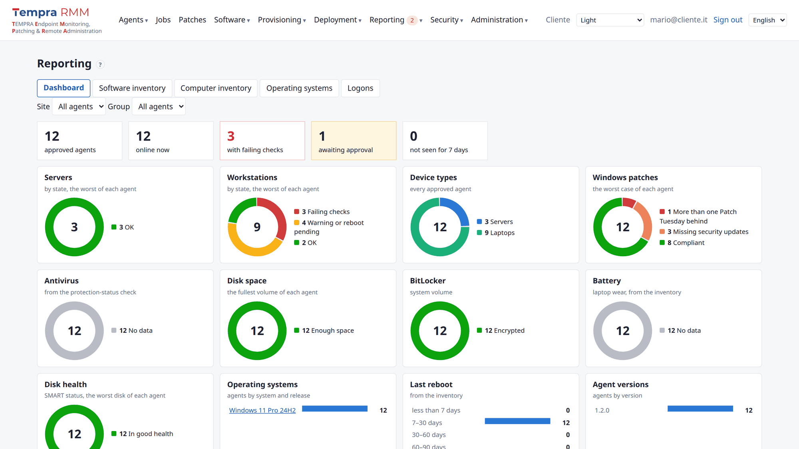

Open-source RMM · AGPL-3.0
Endpoint Monitoring, Patching & Remote Administration — designed with security as a primary requirement.
Windows clients & servers · Linux
Product overview · November 2026
What it is
Windows clients and servers, Linux. Deployed by Group Policy (MSI + ADMX) or a signed installer. No listening port. Features arrive as signed modules — the agent itself rarely changes.
Hosted at the customer, in unprivileged, read-only Linux containers. Multi-tenant from day zero. Operators sign in with Microsoft Entra ID and MFA only.
A central console operates linked customer consoles over an outbound, pinned link — for managed service providers — while commands stay signed at the customer.
Features at a glance
Hardware, BitLocker with key backup, Entra ID, Microsoft 365, software, history.
Windows and its releases, Linux, winget apps, firmware; blockers explained.
Package library, distribution, silent uninstall, workflows.
Ready-made scripts, shell, remote control on any monitor, files.
Matched per computer, exploited first, fix prepared in one click.
Antivirus, firewall, Trend Micro, unusual RDP, password spraying.
Dashboards, inventory search, CSV export, CVE trends.
Ordered profiles that prepare new computers.
The console

Console with demo data.
Security by design
A compromised console must not be enough to run code on your computers.
RMM tools are a favourite target: one breach reaches every endpoint. Tempra RMM is built so that the console alone cannot command the fleet.
Architecture
ENDPOINT
No listening port. Verifies every signature before running anything.
mTLS 443
DMZ
Relays an allow-list of calls as opaque frames. No DB credentials, no CA key.
opened from LAN
LAN
Enrollment and CA key in the core. Job signing key only in the signer. Row-level security per tenant.
The firewall allows no connection from the DMZ to the LAN: the core opens the tunnel and re-verifies every forwarded identity.
Web console stays on the LAN/VPN; only the agents endpoint faces the internet.
A compromised gateway can delay traffic — it cannot forge jobs, modules or certificates.
Per-command MFA
1
Operator reviews
PCs, module, parameters and validity fixed in one hash.
2
Fresh MFA sign-in
Entra ID nonce = that hash: bound to this command only.
3
Signer verifies
Token, MFA, role, freshness, single use. Trusts no console.
4
Signed job
Ed25519 over tenant, agent, module hash, nonce, expiry.
5
Agent verifies
Signature, addressee, expiry, replay cache, then runs.
Admins only: up to 500 PCs per approval, one signed job each.
Shell, screen and files: one MFA per timed session.
Read-only inventory and scans need no new sign-in.
Threat model
| Threat | Mitigation |
|---|---|
| Console compromised | Per-command MFA checked by a separate signer; keys encrypted or offline |
| DMZ host compromised | Relay without DB credentials or CA key; the LAN side opens the tunnel |
| Rogue enrollment | Expiring, use-limited tokens; new agents wait for approval |
| Man-in-the-middle | mTLS with a pinned private root CA; system trust store never used |
| Tampered module or package | Ed25519 signature and SHA-256 checked before anything runs |
| Job replay | Nonce, expiry and agent id signed; persistent replay cache |
| Operator abuse | Roles, per-command MFA, immutable hash-chained audit log |
Supply chain: few dependencies; govulncheck, gosec, staticcheck and race detector in CI.
Keys and signatures
| Key | Where it lives | Signs |
|---|---|---|
| Root CA | Offline | Agents CA |
| Agents CA | Core only (gateway: public part) | Agent certificates |
| Job signing | Signer container only | Jobs, policies |
| Module / release | Builder, passphrase-encrypted; or offline | Modules, agent updates |
| Code signing | Builder: dedicated CA, AD CS or PFX | EXE and MSI |
| BitLocker escrow | Builder only (agents get the public part) | Encrypts recovery keys |
Agent keys are generated on the PC; certificates last 90 days and renew with a new key.
The builder passphrase is asked at each use and never stored by the console.
Revocation disconnects an agent immediately, even mid-session.
Least privilege
| Entra app role | Reaches |
|---|---|
| OpenRMM.Admin | Everything, including settings |
| Admin.Clients / .Servers | Administers PCs only, or servers only |
| OpenRMM.Operator | Commands on every computer, one at a time |
| Operator.Clients / .Servers | Commands on PCs only, or servers only |
| OpenRMM.Reader | Read only |
Roles add up. Acting on several computers at once (bulk actions, a whole group) needs an Admin role. The signer copies the OS family into every job, and the agent refuses a job meant for the other family.
Scopes
An operator, or an Entra security group, is limited to some sites or groups. Checked on commands, approvals, revocations, site moves and provisioning.
Only OpenRMM.Admin can change a site or group that a scope depends on.
Control stays with the customer
Set by GPO, never by the console. Scripts on by default; interactive shell and remote control off unless the domain admin enables them.
Shell up to 60 min, closes after 15 min idle. Remote control up to 60 min. Only the approving operator can attach.
Hash-chained log of every action: full script text, every shell line typed, every file moved with its SHA-256.
Plus: per-tenant row-level security in PostgreSQL · the console refuses superuser database roles · server-rendered UI with strict CSP and no third-party JavaScript.
Vulnerability management
Collect
Every 6 hours
Microsoft, NVD, CISA KEV, Linux package managers.
Match
Inventory
Each Windows build, known app and Linux update.
Prioritise
Exploited first
CISA KEV and ransomware on top, then CVSS.
Fix
Prepared action
Updates, winget, library package or Linux packages.
Track
Daily history
Exposures fall as fixes reach the PCs.
Flags apps in a user profile, out of winget’s reach, and fixes waiting for an app restart.
Windows fixes install current security updates, not an old, replaced KB.
Security dashboard
Found
CVEs
Critical
CVSS 9+
High
CVSS 7+
Exploited
CISA
PCs hit
affected
Exposures (CVE × computer) by severity — illustrative shape
━ High
━ Critical
━ Medium
Five cards with the change over 30 to 365 days; each opens the filtered list.
Vulnerabilities: distinct CVEs on at least one computer.
Exposures: CVE × computer pairs — they drop as updates land.
Recorded daily; cards, charts and trend filter by site or group.
Security dashboard

Console with demo data.
A CVE, end to end
On the CVE page
The prepared fix
| Product | Action |
|---|---|
| Windows | Install security and critical updates |
| Applications | winget upgrade, or deploy from the library |
| Linux | Upgrade the affected packages |
The operator reviews the computer list and approves once with MFA.
Vulnerability detail

Console with demo data.
Patching
Missing updates by age; Windows 11 moved to a newer release. WSUS and Intune PCs are observed.
Pinned release, dead WSUS, disabled services, pauses, low disk — found and explained.
winget, plus a console catalog that also covers Server 2019 and hand-installed apps.
Dell, Lenovo, HP vendor tools. BIOS only on request, BitLocker suspended once.
Modules never reboot. A policy picks the window, the notice and when to skip.
An outdated app on many PCs → Update… → review → one MFA.
Patch dashboard

Console with demo data.
Microsoft 365 and BitLocker
Join type, tenant, Intune, Autopilot and Defender onboarding, read on the PC: no Graph, no secrets on the console.
Version, channel, license, OneDrive backup and personal accounts per user. Checks every 6 hours; update, change channel or repair with one MFA.
Every recovery key is encrypted on the PC before it leaves. Reading one takes a fresh MFA plus the builder passphrase, and is always audited.
All of it is searchable: entra_join:hybrid AND intune:no, office_license:perpetual, personal_account:yes.
Reporting
| Reports |
|---|
| Dashboard by site or group |
| Software inventory |
| Computer inventory + advanced search |
| Operating systems and builds |
| Logons and failed attempts |
| Activity (audit log) |
Simple filters turn into an editable query. Every table exports to CSV; a software search offers the upgrade ready to approve.
Advanced search: AND, OR, NOT, parentheses
os_family:client AND bitlocker!=on
Clients with an unencrypted system disk
secure_boot:no OR tpm:no
No Secure Boot or no TPM
software<"Google Chrome@142"
Chrome older than 142
uptime_days>30
Not rebooted for over 30 days
Reporting dashboard

Console with demo data.
Remote operations
| Tool | Approval | Limit | Safeguards |
|---|---|---|---|
| Script | MFA per command | 15 min–48 h | Full text audited; AMSI and logging stay on |
| Shell | MFA per session | 60 min | Off unless GPO allows; every line audited |
| Remote control | MFA per session | 60 min | Off unless GPO allows; clipboard per GPO; transfers audited |
| Files | MFA per session | 240 min | Agent folders refused; SHA-256 audited |
| Bulk action | One MFA, Admins only | 500 PCs | One signed job per computer |
Shell and remote control open in the browser over the agent’s own connection: no extra port, no third-party tool. Remote control picks the monitor, sends only what changed, shares the clipboard, types whatever the keyboard layouts and moves files to and from the user’s Desktop.
Software and provisioning
Library
MSI or EXE uploaded or imported from winget. Hash-checked; Authenticode required unless allowed.
Workflows
Detection rules, then conditional steps (e.g. AD group). Revisions kept; group assignments approved once.
Provisioning
Up to 30 workflow and reboot steps. Admin approves a version once; operators run it on new clients.
Silent uninstall too, on one computer or many: the right method per installer type, verified afterwards. The winget catalog refreshes every 8 hours. Provisioning refuses servers and asks to confirm data loss.
Built for service providers
A tenant id in every row, API and job, enforced by row-level security. MSP mode creates customer tenants from the console.
The customer console dials out to the central one over a pinned link. Everything doable locally is doable centrally.
Commands still signed by the customer’s signer with the operator’s MFA. Role cap, suspend, local audit.
Two levels at most. Each link keeps a set number of tunnels; shell and remote-control sessions take one each. The customer console stays autonomous when the link is down.
Technology
| Layer | Choice |
|---|---|
| Agent and console | Go; gRPC over HTTP/2 with mTLS |
| Database | PostgreSQL 16, row-level security, LISTEN/NOTIFY job queue |
| Deployment | Docker Compose; non-root, read-only, no capabilities |
| Web console | Server-rendered, strict CSP, no third-party JavaScript; Italian and English |
| Modules | Signed PowerShell, sh or Go plugins over a JSON-lines protocol |
| Agent updates | Signed A/B releases, pilot and broad rings, rollback in 10 minutes |
| Packaging | Signed MSI and ADMX for Group Policy; self-extracting Linux installer |
| Licence | GNU AGPL-3.0 |
Status and roadmap
Available
Next
In one sentence
Every command a person approved, every key in its place, every action on the record.
Tempra RMM — open source, hosted at the customer, secure by design.